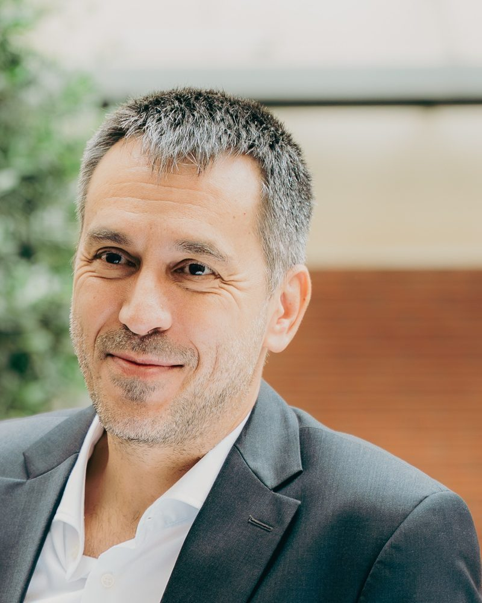

Out-of-home delivery & locker networks
Strategy and operations for locker-based delivery: network design, customer adoption, and routing parcels to where people actually want them.
Athens, GR · Innovation · Last-mile logistics
Head of Innovation at ACS Courier & Postal Services, and ACS ambassador to iQnovus, the Quest Group innovation centre. I connect new logistics models — out-of-home delivery, locker networks, urban logistics pilots — with real operations.
My route here went through more than a decade in medical-sector sales and product management, then ACS corporate sales. So I look at every pilot from two sides at once: does it work operationally, and does it create value for the customer and the business. Outside the day job: agentic AI, Python, blockchain, Web3 and IoT.

Focus areas
Strategy and operations for locker-based delivery: network design, customer adoption, and routing parcels to where people actually want them.
Piloting new delivery models in dense city environments — micro-hubs, consolidated flows, low-emission last mile — with Athens as the main testbed.
Horizon Europe and national projects: shaping proposals, coordinating pilots and partners, and delivering on time and in budget — with claims a courier operator can credibly stand behind.
The hard part of innovation: moving ideas out of the demo phase and into daily operations, working with startups, universities, research centres, technology providers and public authorities.
Project portfolio
Horizon Europe
Greek & EU co-funded
Role across projects: ideation and pilot design, proposal coordination, consortium and partner management, internal F&A and operational coordination, and dissemination.
Background
PE teacher in primary schools (Rhodes, Athens) and fitness instructor/manager — where the sports science foundation comes from.
Over a decade across medical device companies (Vamvas Medicals, 4MED, Oxymed, MEDIWAY and others): product management, sales, training teams and supporting surgeons — mainly surgical and laparoscopic products.
Public and private tenders, new business, and ACS special projects: biological substances, blood samples and pharma deliveries (ACS Medi Express).
Opening up the company's innovation process in close collaboration with iQnovus, the Quest Group innovation centre — building the mechanisms and culture for new technologies, alongside first Horizon EU participations.
Funding opportunity exploration, pilot design, proposal coordination and management of granted projects — partners, consortium meetings, deliverables, on time and in budget. Plus ecosystem building with startups, academia, research centres and public authorities.
Credentials